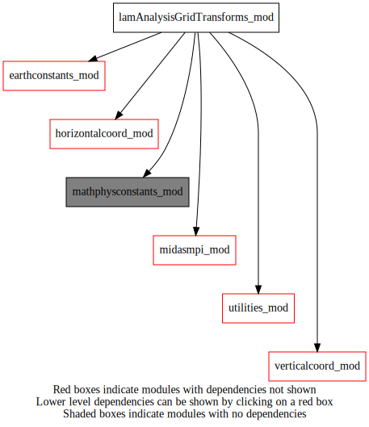
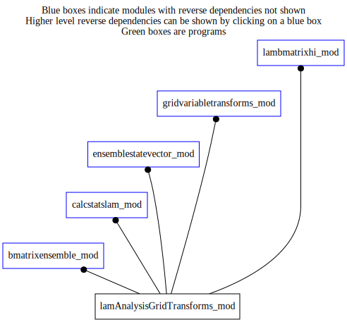

lamAnalysisGridTransforms_mod¶
Dependency Diagrams:
 Direct Dependency Diagram¶
 Reverse Dependency Diagram¶
Description
MODULE lamAnalysisGridTransforms_mod (prefix=’lgt’ category=’7. Low-level data objects’)
- Purpose
Performs some horizontal grid-point variable transforms for the limited-area computational analysis grids (extended and non-extended).
Quick access
- Routines
lgt_createlamtemplategrids(),lgt_mach(),lgt_mach_r4(),lgt_psichitouv(),lgt_psichitouvadj(),lgt_setupfromhco(),lgt_uvtovortdiv(),symmetrize(),symmetrize_coef(),symmetrizeadj(),uvstagtocolloc(),uvstagtocollocadj()Needed modules
earthconstants_mod: MODULE earthConstants_mod (prefix=’ec’ category=’8. Low-level utilities and constants’)
mathphysconstants_mod: MODULE mathPhysConstants_mod (prefix=’mpc’ category=’8. Low-level utilities and constants’)
horizontalcoord_mod: MODULE horizontalCoord_mod (prefix=’hco’ category=’7. Low-level data objects’)
verticalcoord_mod: MODULE verticalCoord_mod (prefix=’vco’ category=’7. Low-level data objects’)
midasmpi_mod: MODULE midasMpi_mod (prefix=’mmpi’ category=’8. Low-level utilities and constants’)
utilities_mod: MODULE utilities_mod (prefix=’utl’ category=’8. Low-level utilities and constants’)
vgrid_descriptorsTypes
- type lamanalysisgridtransforms_mod/unknown_type¶
- Type fields
% conima (*) [real ,allocatable]
% conphy (*) [real ,allocatable]
% cos2 (*) [real ,allocatable]
% cos2h (*) [real ,allocatable]
% cos2hvd (*) [real ,allocatable]
% cos2vd (*) [real ,allocatable]
% dx [real ]
% idmu (*) [real ,allocatable]
% idmuh (*) [real ,allocatable]
% rdlat [real ]
% rdlon [real ]
% rlat (*) [real ,allocatable]
% rlon (*) [real ,allocatable]
Variables
Subroutines and functions
- subroutine lamanalysisgridtransforms_mod/lgt_setupfromhco(hco_ext_in[, hco_core_opt])¶
- Arguments
hco_ext_in [struct_hco ,in,pointer]
- Options
hco_core_opt [struct_hco ,in,pointer]
- Called from
- Call to
utl_abort(),lgt_mach(),symmetrize_coef(),mmpi_setup_lonbands(),mmpi_setup_latbands()
- subroutine lamanalysisgridtransforms_mod/symmetrize_coef(coef_inout)¶
- Purpose
Extend symmetrically Metric coefficients.
- Arguments
coef_inout (jend-(jstart)+1) [real ,inout]
- Called from
- subroutine lamanalysisgridtransforms_mod/lgt_psichitouv(psi, chi, uphy, vphy, nk)¶
- Arguments
psi (mylonend-(mylonbeg)+1,mylatend-(mylatbeg)+1,nk) [real ,in]
chi (mylonend-(mylonbeg)+1,mylatend-(mylatbeg)+1,nk) [real ,in]
uphy (mylonend-(mylonbeg)+1,mylatend-(mylatbeg)+1,nk) [real ,out]
vphy (mylonend-(mylonbeg)+1,mylatend-(mylatbeg)+1,nk) [real ,out]
nk [integer ,in,]
- Called from
- Call to
- subroutine lamanalysisgridtransforms_mod/lgt_psichitouvadj(psi, chi, uphy, vphy, nk)¶
- Arguments
psi (mylonend-(mylonbeg)+1,mylatend-(mylatbeg)+1,nk) [real ,out] :: OUT
chi (mylonend-(mylonbeg)+1,mylatend-(mylatbeg)+1,nk) [real ,out] :: OUT
uphy (mylonend-(mylonbeg)+1,mylatend-(mylatbeg)+1,nk) [real ,in]
vphy (mylonend-(mylonbeg)+1,mylatend-(mylatbeg)+1,nk) [real ,in]
nk [integer ,in,]
- Called from
- Call to
- subroutine lamanalysisgridtransforms_mod/uvstagtocolloc(ustag, vstag, ucolloc, vcolloc, ibeg, iend, jbeg, jend, nk)¶
- Arguments
ustag (iend-ibeg+2,jend-jbeg+2,nk) [real ,in]
vstag (iend-ibeg+2,jend-jbeg+2,nk) [real ,in]
ucolloc (iend-ibeg+1,jend-jbeg+1,nk) [real ,out]
vcolloc (iend-ibeg+1,jend-jbeg+1,nk) [real ,out]
ibeg [integer ,in]
iend [integer ,in]
jbeg [integer ,in]
jend [integer ,in]
nk [integer ,in,]
- Called from
- subroutine lamanalysisgridtransforms_mod/uvstagtocollocadj(ustag, vstag, ucolloc, vcolloc, ibeg, iend, jbeg, jend, nk)¶
- Arguments
ustag (iend-ibeg+2,jend-jbeg+2,nk) [real ,out]
vstag (iend-ibeg+2,jend-jbeg+2,nk) [real ,out]
ucolloc (iend-ibeg+1,jend-jbeg+1,nk) [real ,in]
vcolloc (iend-ibeg+1,jend-jbeg+1,nk) [real ,in]
ibeg [integer ,in]
iend [integer ,in]
jbeg [integer ,in]
jend [integer ,in]
nk [integer ,in,]
- Called from
- subroutine lamanalysisgridtransforms_mod/symmetrize(field_out, field_in, ibeg, iend, jbeg, jend, nk)¶
- Purpose
Extend symmetrically outside 1 grid point all around LAM-boundary ready for finite differences
- Arguments
field_out (iend-ibeg+3,jend-jbeg+3,nk) [real ,out]
field_in (iend-ibeg+1,jend-jbeg+1,nk) [real ,in]
ibeg [integer ,in]
iend [integer ,in]
jbeg [integer ,in]
jend [integer ,in]
nk [integer ,in,] :: IN
- Called from
- subroutine lamanalysisgridtransforms_mod/symmetrizeadj(field_in, field_out, ibeg, iend, jbeg, jend, nk)¶
- Purpose
Adjoint of sub. symmetrize.
- Arguments
field_in (iend-ibeg+3,jend-jbeg+3,nk) [real ,in]
field_out (iend-ibeg+1,jend-jbeg+1,nk) [real ,out]
ibeg [integer ,in]
iend [integer ,in]
jbeg [integer ,in]
jend [integer ,in]
nk [integer ,in,] :: IN
- Called from
- subroutine lamanalysisgridtransforms_mod/lgt_mach(gd, ni, nj, nk)¶
- Purpose
[to be completed]
- Arguments
- Arguments
ni [integer ,in,] :: Maximum I-dimension where the input array is assumed to carry information. Will be used as I-limit where backward derivatives will be evaluated
nj [integer ,in,] :: Maximum J-dimension where the input array is assumed to carry information. Will be used as J-limit where backward derivatives will be evaluated
gd (ni,nj,nk) [real ,inout]
nk [integer ,in,]
- Called from
- Call to
- subroutine lamanalysisgridtransforms_mod/lgt_mach_r4(gd, ni, nj, nk)¶
- Purpose
[to be completed]
- Arguments
- Arguments
ni [integer ,in,] :: Maximum I-dimension where the input array is assumed to carry information. Will be used as I-limit where backward derivatives will be evaluated
nj [integer ,in,] :: Maximum J-dimension where the input array is assumed to carry information. Will be used as J-limit where backward derivatives will be evaluated
gd (ni,nj,nk) [real ,inout]
nk [integer ,in,]
- Called from
- Call to
- subroutine lamanalysisgridtransforms_mod/lgt_uvtovortdiv(vorticity, divergence, uphy, vphy, nk)¶
- Arguments
vorticity (mylonend-(mylonbeg)+1,mylatend-(mylatbeg)+1,nk) [real ,out]
divergence (mylonend-(mylonbeg)+1,mylatend-(mylatbeg)+1,nk) [real ,out]
uphy (mylonend-(mylonbeg)+1,mylatend-(mylatbeg)+1,nk) [real ,in]
vphy (mylonend-(mylonbeg)+1,mylatend-(mylatbeg)+1,nk) [real ,in]
nk [integer ,in,]
- Called from
- Call to
- subroutine lamanalysisgridtransforms_mod/lgt_createlamtemplategrids(templatefilename, hco_core, vco, grd_ext_x, grd_ext_y)¶
- Arguments
templatefilename [character ,in]
hco_core [struct_hco ,in]
vco [struct_vco ,in]
grd_ext_x [integer ,in]
grd_ext_y [integer ,in]
- Called from
- Call to
{kind=link}
{kind=link}